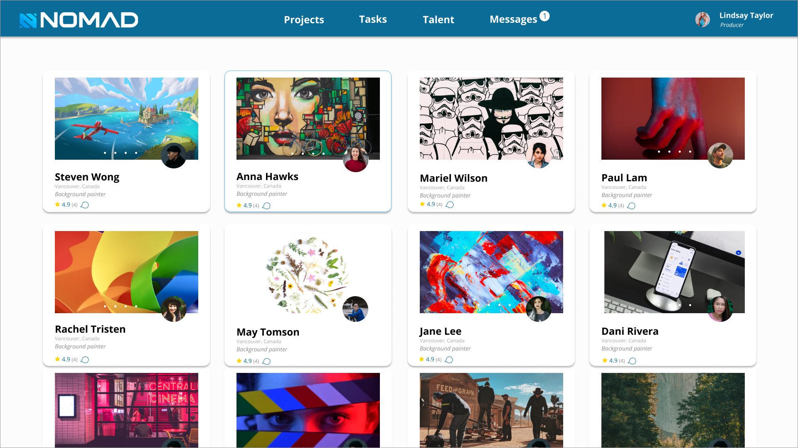
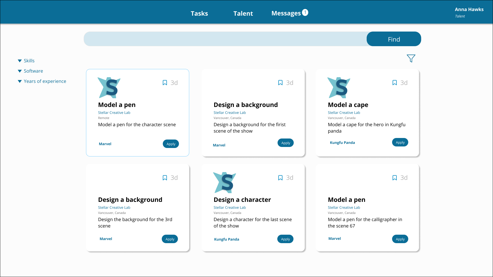
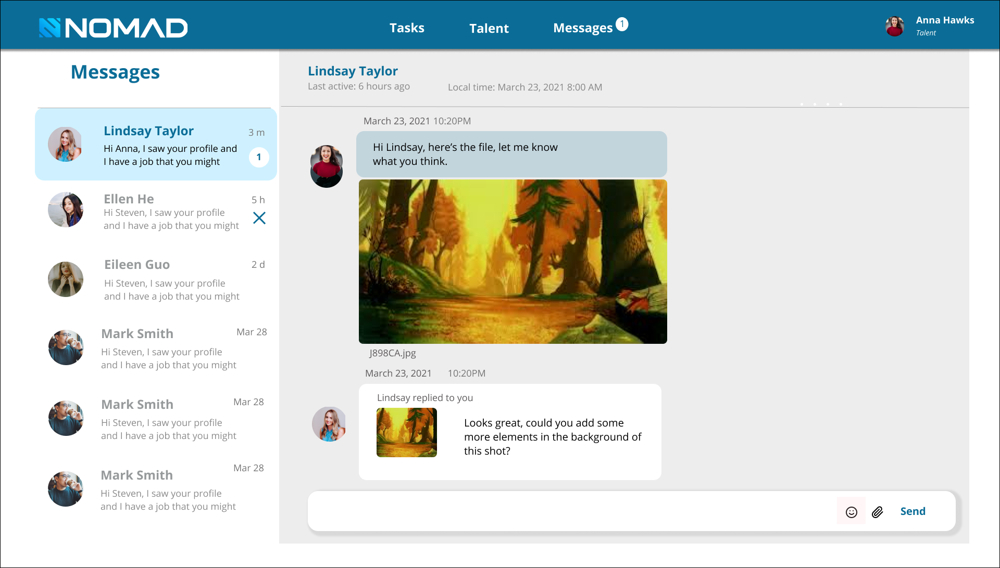

Nomad-Project
Designing the MVP of an animation marketplace
Nomad is a software that helps people who work in animation connect with opportunities in the industry. I worked on this project as the product designer, working with one product manager and one developer.
Background
I created the full prototype of an animation marketplace for Stellar Creative Lab. Stellar Creative lab is an animation studio that produces 3D animations for Dreamworks, Marvel, and Disney. In late 2020, they had a vision of creating a digital product for the animation industry based on a need they experienced. The Nomad project seeks to fill the gap between the need for remote animation workers to relevant work in the industry by allowing producers to find talent and allowing talent to find jobs in the animation marketplace.
Challenge
There are other freelancing platforms out there but none specifically for the animation industry. Competitors like workingnotworking and fiver did not fulfill the need of the producers who wanted to find freelance animation talent in a quick timespan. Jobs in the animation industry have a quick turn around and are usually contract based. Producers wanted a platform that delivered animation talent exclusively to fill the talent gap whenever needed. This platform also provides location independence to freelance animators as they can find animation gigs on the website and work from anywhere they want.
Approach
The approach was to conduct research through interviewing the producers of our studio. Through the interviews, I realized that the main pain point was that animation producers often need to fill roles quickly but they are difficult to find because animators are high in demand and they often can’t hire internationally.
There are 2 main user personas, the talent who are looking for work and the producers who are looking for talent to fill the gaps in their studio. The talent wants to work remotely and to have more independence in their work. On the other hand, the producers want to have a greater variety of pool of talent to choose from as well as the ability to find talent from all over the world, not just locally.


Final products for the project
- Designed more than 80 project pages on Figma
- Researched the user journey for 2 primary user personas
- Created a design system and style guide for fonts, and colors
- Defined project features with the product manager
- Created 2 interactive prototypes with Invision

OUTCOME
Alongside one product manager and one developer, we finished the interactive prototype and developed a working prototype in 6 months. We got great feedback from animators and producers in the industry and it is in the next phase of development.
This project involved a lot of product thinking, and detailed interaction work. I had to work under very strict technical constraints, but still fight for what I believe is essential to having a good user experience.
This was also a exciting and fun project for me to work on as this was the first time I worked on a project from beginning to end as the sole designer. I learned alot about product thinking and worked really closely with the product manager, and drove continuous UX improvements throughout the project.